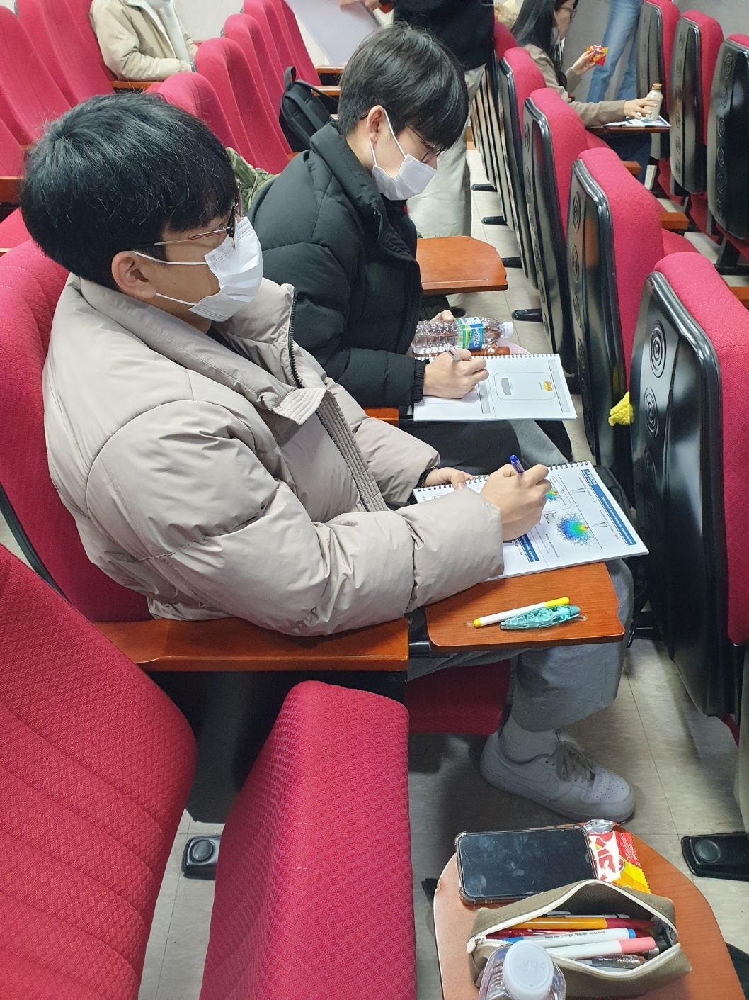

고분자 나노 공학부, 전자공학부가 모여
2차전지 산업에 대한 분석과 분리막 성질에 대한 탐구, 프론트앤드 웹 페이지 개발 활동을 하였습니다
ACTIVITY HISTORY
2차전지의 구조 및 산업분석
전기차 시장의 증가와 2차전지 산업을 분석하였고
엔지니어로써 전기차가 내연기관 자동차를 뛰어넘기 위해
2차전지 기술발전의 과제를 탐구하였습니다. 이를 2차전지의 분리막과
이온전도도 등 전공과 연관지어 탐구하고 실험계획을 수립했습니다.
EIS 장비를 이용한 이온전도도 측정
EIS(전기화학 임피던스 측정장비) 를 이용하여
2차전지의 분리막 소재인 PVDF 맴브레인 필터 소재의 임피던스와 이온전도도를 측정하고
이상적인 분리막의 이온전도도와 비교하여 분리막 소재로서 적합한 이온전도도를 가졌는지
분석하는 실험을 하였습니다. 이 과정에서 EIS 장비의 사용방법에 대해 숙지하게 되었고
다른 전공이지만 서로 부족한 점을 보완하면서 올바른 실험 결과를 도출해내었습니다.

링크 사업단 FE-SEM 교육 참석-오전
1월 19일에 진행하는 링크 사업단 FE-SEM(전계 방사형 주사 전사 현미경) 교육에 참석하였습니다.
장비가 작동하는 원리와 전자총(electron gun), 전자렌즈(electron lens), 조리개(aperture),
검출기(detector) 등으로 이루어진 기기구성에 관한 수업에 참석하였습니다.
링크 사업단 FE-SEM 교육 참석-오후
오후에는 장비를 직접 다뤄보는 시간을 가졌습니다.
장비 실습시간에는 표본을 샘플링 하는 방법,
현미경으로 본 이미지의 왜곡이나 오염을 전압과
Beam align, aperture align , stigma X align, stigma Y align
등을 조정하여 보정해보는 시간을 가졌습니다.
SEM을 이용한 PVDF membrane - 다공성 표면 관찰
- SEM 기기를 통해 촬영한 PVDF membrane입니다.
다공성 성질을 확인하고자 하였던 최초의 의도와 다르게
샘플의 표면에는 구멍이 있는 구조가 아닌 여러 가닥이 얽혀 있는
구조로 이루어져 있음을 확인하였습니다.
이 전 이온전도도 실험의 결과값과 표면 사진을 통해 해당
PVDF가 분리막 소재로서 적합한지 판단하였습니다.
PVDF membrane & PET – IR 분석
SEM을 사용하여 PVDF 막의 전체적인 3D 모델링을 관찰했다면,
실제로 막을 이루는 화학적 구조를 알아보기 위해 IR을 사용하였습니다.
IR (Infra-Red, 적외선)을 사용하여 물체를 관찰하게 되면
고분자 사슬 내에 존재하는 주요 작용기에
대한 정보를 직접적으로 알아낼 수 있습니다.
책자 및 웹페이지 작성
자기설계 공모전 활동을 정리하여 소책자 및 웹페이지를 작성하였습니다.
소책자로는 저희들의 활동을 모두 보여주기는 힘들다는 판단으로
웹페이지를 제작하게 되었고 이를 통해 웹 프론트앤드 개발(HTML, CSS) 역량 또한
증가시킬 수 있었습니다.